In my 4 month co-op I designed fixtures and implemented processes to improve our manufacturing capability.
I helped troubleshoot many printer issue, wrote process automation Gcode and created some interesting
3d electronic designs.
Ophardt Hygiene
R&D Student
Fall 2015
While working as a project engineering intern at Ophardt Hygiene I created motor efficiency and energy
consumption graphs for our products. I also designed and implemented a proof of concept level
measuring system to troubleshoot overflowing bioreactors.
VASPAC
Systems Engineer
Systems Engineer
During my co-op at VASPAC I worked as a process engineer designing a control console HMI. The HMI
was programmed in Archestra and is intended for use at a power plant. Much of my work here was
in process automation and UI design.
About Me
I'm an Undergrad student studying Mechanical Engineering with an option in Engineering Biomechanics at
the University of Waterloo. My interests lie in 3D printing, robotics and biologically inspired engineering. I also like traditional and digital art.
A portable Raspberry Pi gaming console, designed and printed by me. The desin evolved a lot from
start to finish, the entire project took 2-3 weeks and was done almost entirely with spare/extra
parts in the office.
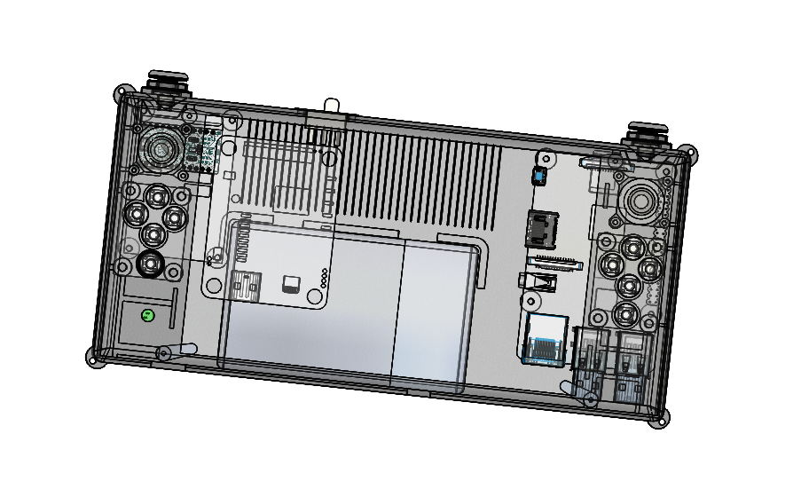 The controls are done
through an Arduino Pro Micro which has an atmega32u4 microcontroller with a built in USB
transciever.
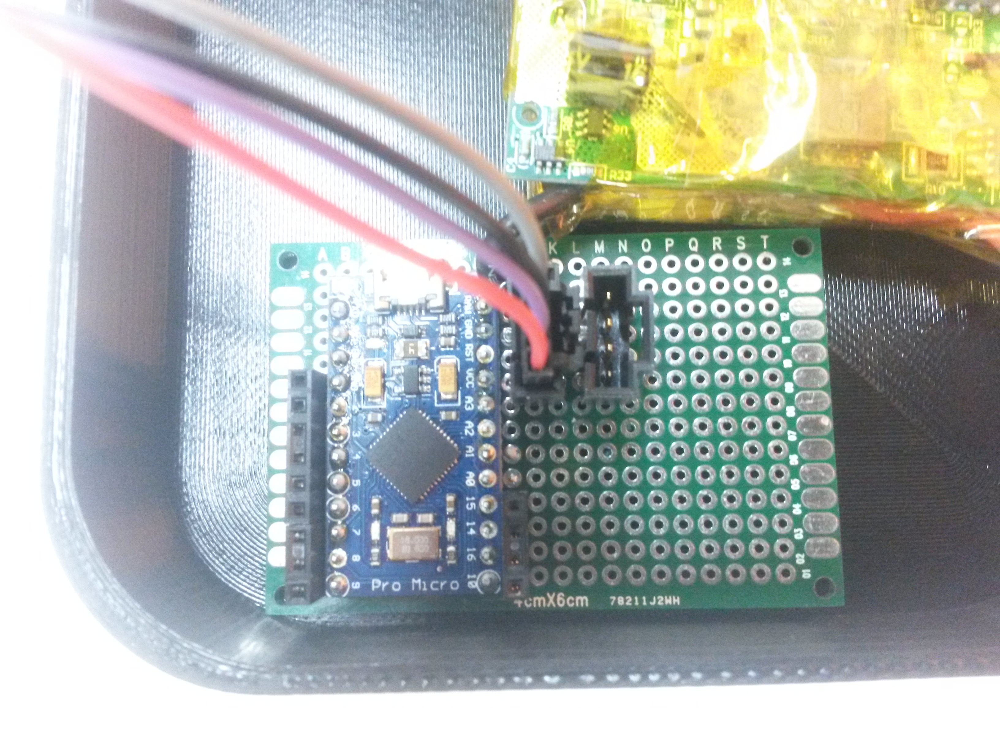
This allows the Arduio to act as a generic HID device, in this case it's acting as a custom gamepad.
Power is provided by a 10AH Anker battery, I desoldered the low battery indicator and routed
it to a large green LED visible on the front.
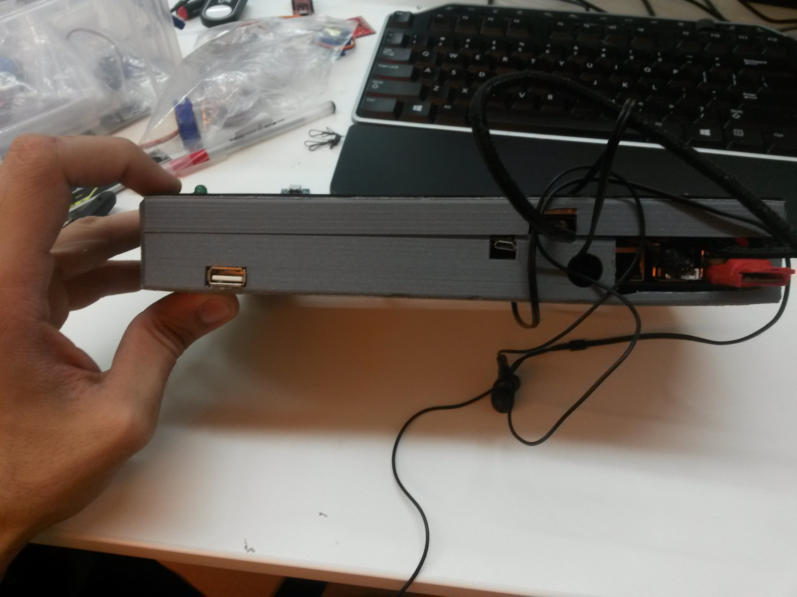
This was done to provide indication of low battery so you don't damage your pi. There is a DPDT switch between the battery,
Pi and USB A female port. This allows you to charge the battery while providing power to
the Pi from a wall outlet. More details about this project can be found on the hackaday
page.
Quadruped Robot
This is a project that I am working on to create a quadruped walking robot. So far I've finished
designing the legs which are the most integral and complicated mechanical system.
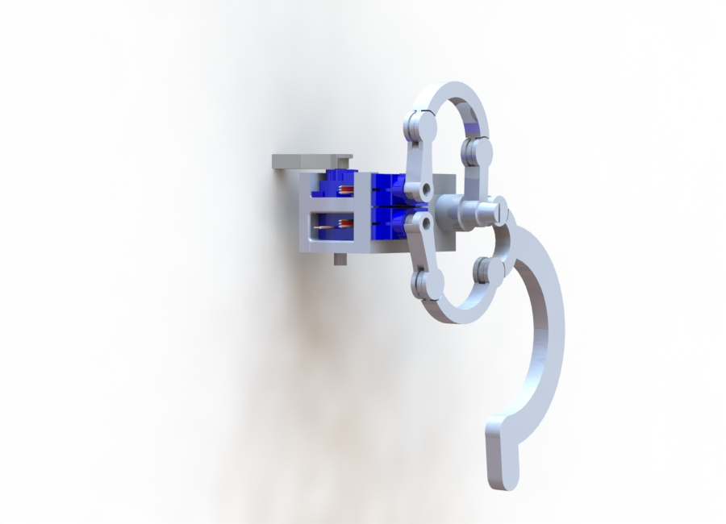
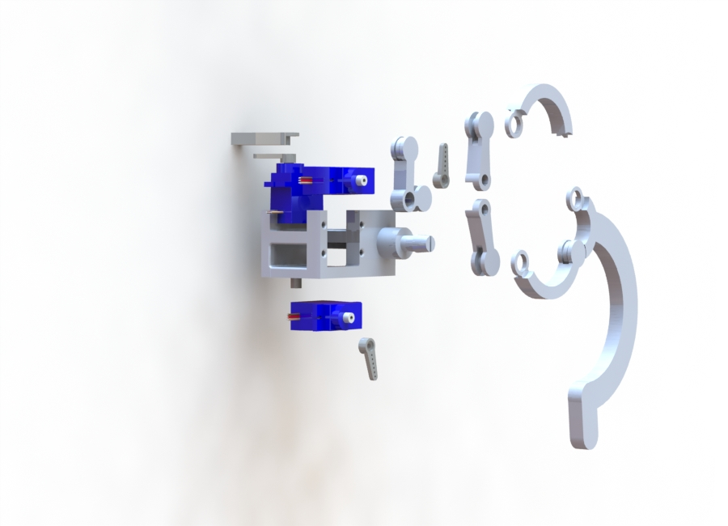
Each leg uses 2 double rockers, one to actuate the foreleg and one to actuate the upper leg. The philosophy behind this design
was to have all of the motors required for movement located as close together as possible.
As you can see the two servos required to actuate the leg and the servo required to rotate
the hip are all located within a single motor housing. Normally a quadruped, hexapod, ETC
walking robot will have a motor at each successive joint.
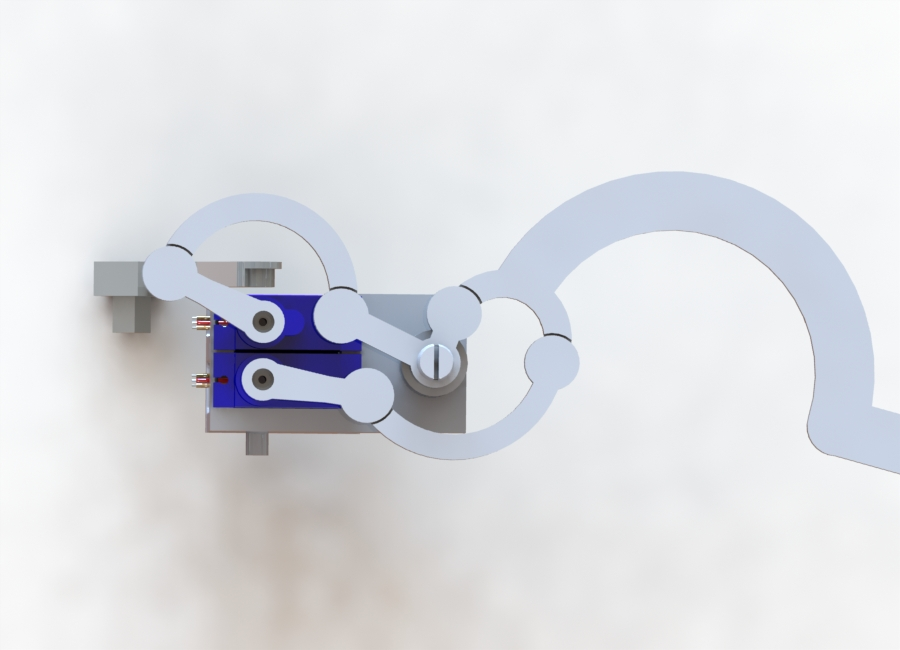
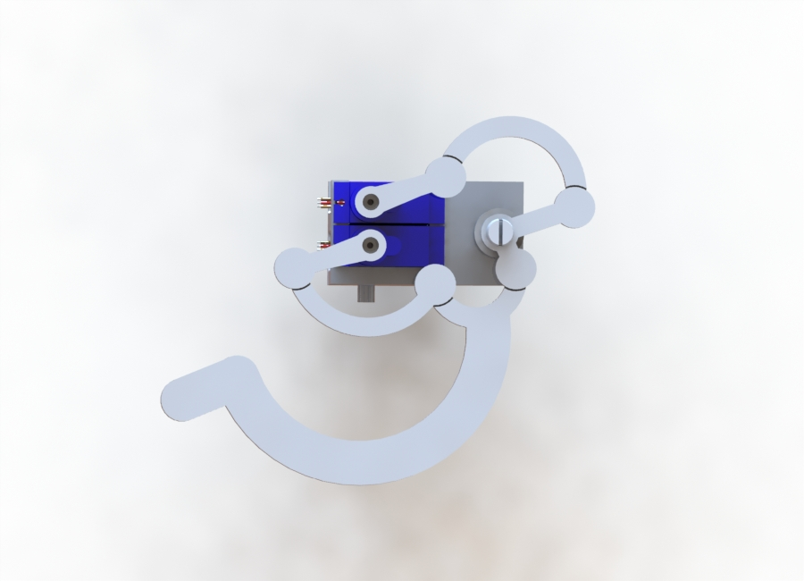
This is problematic as each successive joint increases the amount of torque required by the previous motor and also makes
the movement jerkier. Having all the motors in a single location also allows me to use much
cheaper, weaker motors and an overall smaller design. More information can be found on the
GrabCAD page
3D Printed Gamepad
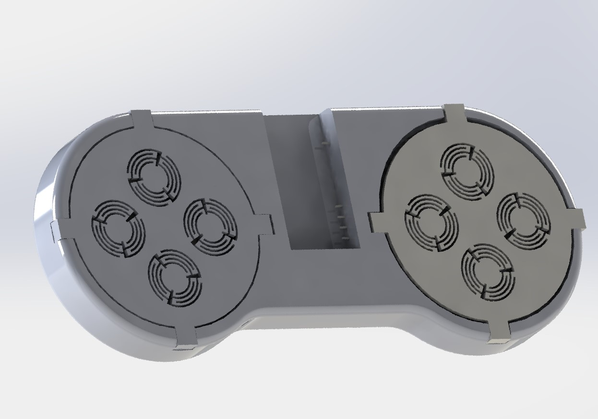
The gamepad initially used mechanical plastic springs to actuate the buttons. These springs are
printed of PLA and grouped in 3s to center the button when it is pressed. An arduino micro
board is used to transmit the button presses to a computer. The left and right bumpers are
actuated through the deflection of a cantilever beam that completes the circuit between two
parallel lines. The Arduino micro connects each button between a signal and ground. In the
off state the signal pins transmit 3.3V to the open circuit and completing the circuit grounds
the buttons. This was done so that impedance would not be an issue and so that a pull-up
resistor could be avoided.
The gamepad like all Voxel8 prints is composed of 3 distinct parts. The plastic body, the silver
trace and embedded components. In this print the plastic body acts as the case and part of
the actuation mechanism. The springs are all entirely printed the print comes in 4 pieces,
the main body and 3 button covers. Silver traces run through the body at 3 different layers
to avoid shorting any of the pin outputs. Silver is also printed on the bumpers. Finally
an Arduino Micro needs to be inserted into the print shortly before finishing to map all
of the button inputs.
Each button utilizes 3 evenly spaced springs to deflect and make contact with the trace below. The bumpers act as cantilevers
and connect parallel traces. The traces are parallel unlike the buttons so that the exact
location of the deflected cantilever does not matter as long as it makes contact.
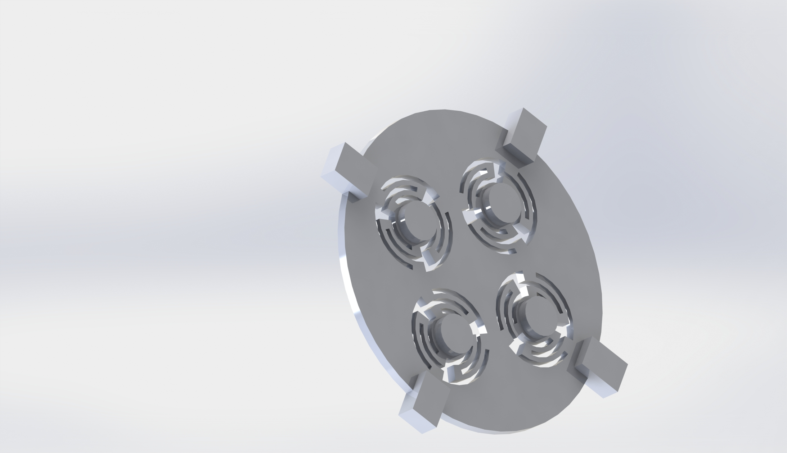
While the prototypes were functional they weren't exactly ergonomic or reliable.
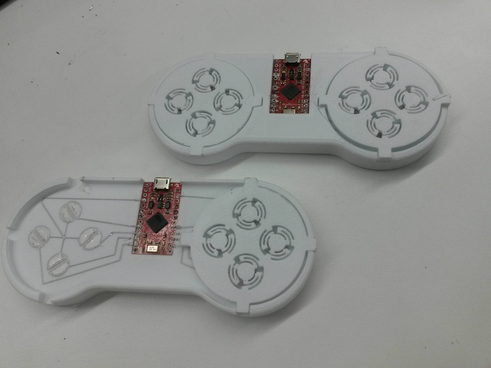
The newest version of the gamepad is much different. It has a more complex subassembly to actuate the buttons. The spring
isn't seperated for each but rather works like a mesh, this allows you to change direction
very easily. There is also space in the middle for a TFT screen and Raspberry Pi Zero. Unfortunately
I left my co-op before finishing the final design.
Delta Printer
This is a delta printer I'm' currently designing. The majority of the design is based off the
Kossel Mini printer, most of the work I'm doing is designing my own magnetic ball carriage
and rail system to accomodate the 80/20 1010 Aluminum extrudes I had. The only reason I'm
doing this is because there's no reprap design that uses 80/20 1010 extrudes.
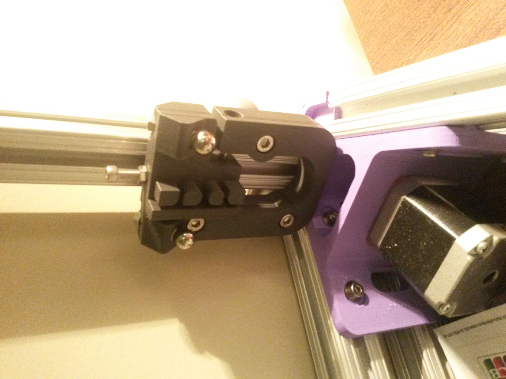
The carriage has 4 pegs, two of which are chamfered to lock the belt to itself without using
zipties. It also has a bolt and nut to tension the wheels on the rail.
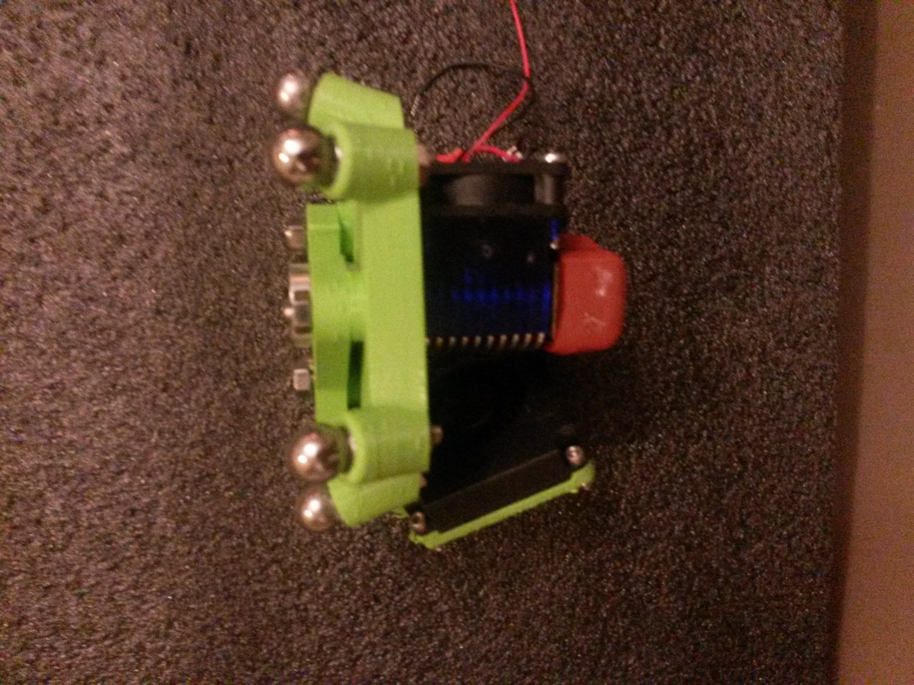
The rod arm ends were printed in a Form 2 printer, they have cylindrical magnets embedded inside
of a curved endcap to lock onto the ball bearings located on the carriage and effector.
The arms themselves were printed from PLA on a Taz Lulzbot 5. The trusses are there for rigidity.
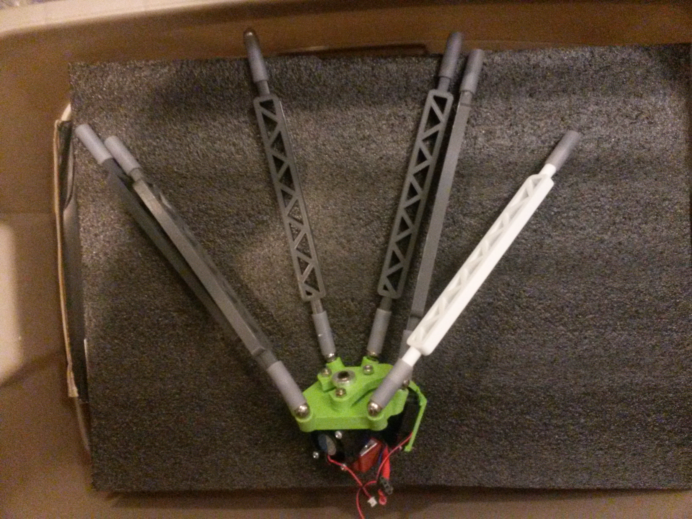
FallSafe
This was a project done for Hack The North 2016. Fallsafe is a portable fall detection system
using a Raspberry Pi 3, 2500mAH battery and 9DOF IMU from Sparkfun. The device detects falls
triggered by a change in Accelereration and angular velocity. After a fall is detected, an
alert is sent through the PagerDuty API to alert the emergency contact of the user. I worked
on writing the python script to determine when a fall occured and what actions to take. This
project won the PagerDuty sponsor prize, more information can be found on the devpost
link
Project Beowulf
This is a project being done by the Biomechatronics club at the University of Waterloo. Project
Beowulf is an attempt to create a 3D printed exoskeleton glove that increases a user's grip
strength.' I'm helping in the design of the mechanical linkages that help actuate the fingers,
more information can be found at the Hackaday
page.
Bio-Reactor Level Measurement
Use this area of the page to describe your project. The icon above is part of a free icon set
by Flat Icons. On their website, you can download
their free set with 16 icons, or you can purchase the entire set with 146 icons for only
$12!
CNC Air Pressure Control
Use this area of the page to describe your project. The icon above is part of a free icon set
by Flat Icons. On their website, you can download
their free set with 16 icons, or you can purchase the entire set with 146 icons for only
$12!


 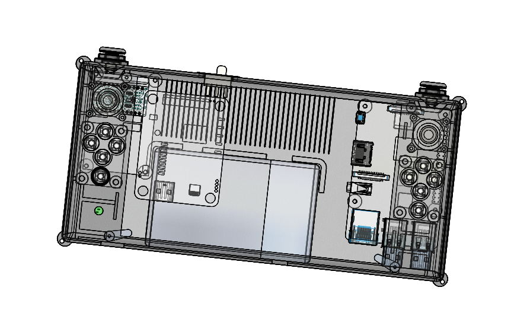 The controls are done
through an Arduino Pro Micro which has an atmega32u4 microcontroller with a built in USB
transciever.
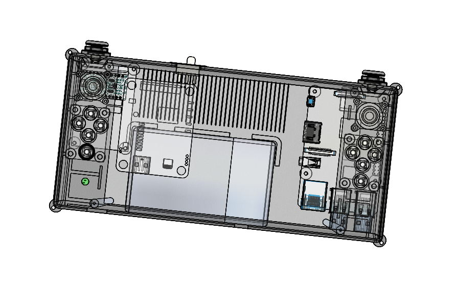 The controls are done
through an Arduino Pro Micro which has an atmega32u4 microcontroller with a built in USB
transciever.